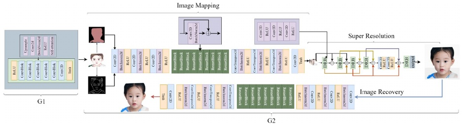
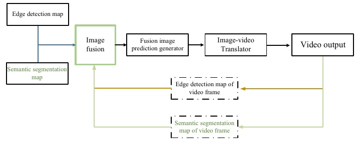
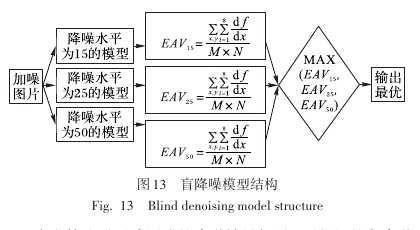

Publications
MoVT: Video-Augmented Motion Tokenizer for Text-to-Motion Generation
Beibei Jing, Tianle Guo, Youjia Zhang, Zikai Song, Yawei Luo, Junqing Yu, Tao Guan, Wei Yang
ACM Multimedia (2026) Oral · Accepted · 0 citations
MoVT maps a 3D motion codebook into a 2D representation, enriches it with motion patterns from videos, and transfers that knowledge back to 3D. A masked transformer learns from both motion–text pairs and annotated videos.
Retrieving Videos for Augmented Human Motion Generation
Beibei Jing et al.
IEEE ICME (2026) · Citations: not indexed
RV2M retrieves action videos using a text prompt and uses their features to guide 3D motion synthesis. Phrase-based retrieval and composition provide references for descriptions that have no single matching video.
AMD: Anatomical Motion Diffusion with Interpretable Motion Decomposition and Fusion
Beibei Jing, Youjia Zhang, Zikai Song, Junqing Yu, Wei Yang
AAAI (2024) · 11 citations
AMD decomposes motion descriptions into interpretable anatomical instructions. Its diffusion model combines body-part guidance with the original text to preserve whole-body coherence, supporting complex motion synthesis, local editing, and completion.

Image generation step by step: animation generation-image translation
Beibei Jing, Hongwei Ding, Zhijun Yang, Bo Li, Qianlin Liu
Applied Intelligence (2022) · 52(7), 8087–8100 · 15 citations
A staged image-generation pipeline connects animation generation, image translation, and super-resolution to improve the quality of synthesized images.

Video prediction: a step-by-step improvement of a video synthesis network
Beibei Jing, Hongwei Ding, Zhijun Yang, Bo Li, Liyong Bao
Applied Intelligence (2022) · 52(4), 3640–3652 · 9 citations
A step-by-step video synthesis framework combines semantic segmentation and edge maps, predicts fused image streams, and translates them into video frames.

Image double blind denoising algorithm combining with denoising convolutional neural network and conditional generative adversarial net
Beibei Jing, Jia Guo, Liqing Wang, Jing Chen, Hongwei Ding
Journal of Computer Applications (2021) · 41(6), 1767–1774 · 1 citation
A blind image-denoising method combines a denoising convolutional neural network and a conditional generative adversarial network to handle unknown noise levels.
Citation counts from Google Scholar, checked 9 October 2026. RV2M is not yet listed in the profile.